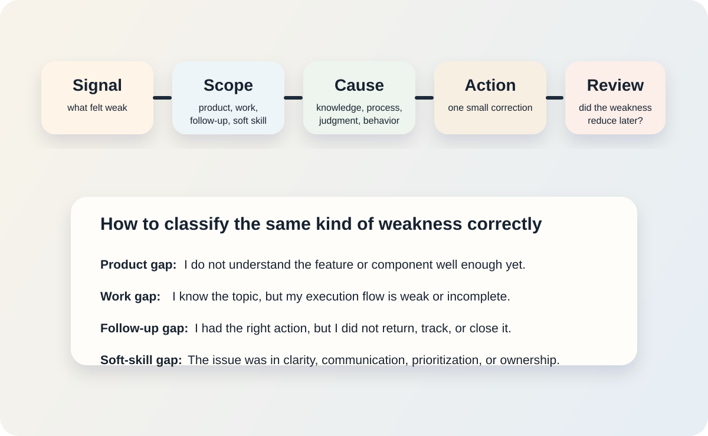

For some time now, I have noticed that the things that slow me down at work are not always big failures. Most of the time, they are small repeated weaknesses that keep coming back in different forms.
Sometimes it is product confusion. Sometimes it is a follow-up that should have been closed earlier. Sometimes it is not technical at all. It is just that I explained something badly, or I left a task without turning it into a real next action.
What stayed with me is that these things rarely look serious in isolation. But over time they waste energy, slow down work, and create the feeling that I am learning without actually reducing the same pattern.
That is why I stopped thinking about weakness tracking like a habit. I started thinking about it like work.
A useful weakness tracking system should help you catch what went wrong, understand what kind of weakness it is, decide what to change, and check later whether it actually improved.
Why You Need A Weakness Tracking Framework
What I kept seeing in my days is that weaknesses do not arrive in one clean category. They move across products, tasks, ownership, follow-ups, and communication.
For example:
- you do not understand a product behavior well enough to troubleshoot it fast
- you know the work, but your execution flow is messy
- you had the right next action, but you did not return to it
- you understood the issue, but explained it badly to another person
I used to treat all of these as the same kind of weakness. That was the mistake. Once everything gets grouped into one bucket, the response becomes vague too. And when the response is vague, improvement stays vague.
So I wanted a framework that fits daily engineering life, not just learning in theory. It should help with:
- product knowledge gaps
- work execution gaps
- follow-up and tracking gaps
- soft-skill and communication gaps
What The Framework Should Give You
What I wanted from the framework was not reflection by itself. I wanted practical benefits:
- it makes repeated weakness patterns visible
- it separates technical gaps from behavior gaps
- it improves follow-through instead of only self-awareness
- it helps you build better product understanding over time
- it gives you a way to review whether the weakness is shrinking or not
The idea I ended up with is simple: if a weakness is real, it should leave evidence in work. If it leaves evidence, I should be able to track it. And if I can track it, I should be able to respond to it in a clear way instead of just feeling bad about it.
The Workloop Framework
I call this framework Workloop.
The name is simple on purpose. I did not want something that sounded smart. I wanted something that described what should happen. A weakness at work should move through a loop. It should not stay as a one-time observation or a passing frustration.
The flow looks like this:
- Signal: what happened that shows a weakness
- Scope: what type of weakness it is
- Cause: why it happened
- Action: what you will change
- Review: whether the weakness reduced later

It looks simple, but that is exactly why I like it. Each step forces one kind of clarity.
How The Workloop Flows In Daily Work
Signal
This is the moment where something shows you there is a gap.
The signal could be:
- a slow incident response
- a repeated mistake in a product area
- a project that stalled because the next action was unclear
- a message or meeting where your explanation was weak
- a follow-up you forgot even though you knew it mattered
The important part is that the signal comes from real work, not from a vague mood.
Scope
This is where I try to classify the weakness correctly.
Not every weakness is technical. Some are about products. Some are about process. Some are about behavior. Some are about communication.
The easiest way I can explain this is: Scope tells me where the weakness showed up. Cause tells me what mechanism produced it.
That means scope is the surface location of the issue, while cause is the engine behind it. If I mix those two together, the action step becomes weak immediately.
| Weakness Scope | What It Usually Means | Example |
|---|---|---|
| Product gap | You do not understand the product or component deeply enough yet | You keep misreading how a platform feature behaves |
| Work gap | You know the area, but your execution flow is weak | You troubleshoot in the wrong order and lose time |
| Follow-up gap | You identified the right action, but did not return and close it | A next step stayed open for days without movement |
| Soft-skill gap | The issue was clarity, ownership, prioritization, or communication | You had the right idea but explained it badly |
This step matters because wrong scope creates wrong action. If the problem is follow-up, reading more product docs will not fix it. If the problem is product understanding, creating another reminder will not fix it either.
Cause
Now ask what actually failed. For me, this is usually the hardest step in the whole framework.
The reason it is hard is simple: the same signal can come from completely different causes.
Take one example: a customer issue took too long to understand.
That can mean at least four different things:
- you did not understand the product deeply enough
- you understood the product, but your troubleshooting order was weak
- you had the right idea, but got distracted and changed direction too early
- you had enough information, but the issue was explained badly between people
On the surface, all of those look like the same weakness. But the fix for each one is different. If the real cause is product understanding, you need better product notes. If the cause is process, you need a better check order. If the cause is attention or prioritization, you need a different working habit. If the cause is communication, you need a better summary method.
That is why I think cause identification deserves more care than people usually give it. If you get the cause wrong, the action step will look active but still fail to reduce the same pattern.
Was it:
- missing knowledge
- a weak process
- a bad assumption
- poor prioritization
- rushed communication
This is the step that stops weakness tracking from becoming emotional. You are not writing “I am weak at this.” You are identifying the mechanism of failure.
A simple test I like here is this: if I changed only one thing, what would most likely reduce this problem next time? The answer usually points toward the real cause.
Action
This is where I think most systems fail. They create a feeling, but not a change.
The action should be small, clear, and specific. One correction. One behavior change. One review habit. One product map. One follow-up rule.
What helped me most here was to stop treating every action as the same kind of response. Different causes need different kinds of fixes.
| Cause Type | Best First Action | What That Usually Looks Like |
|---|---|---|
| Missing knowledge | Build understanding | Create a product note, diagram, or short explanation in your own words |
| Weak process | Tighten the sequence | Write a checklist, check order, template, or troubleshooting path |
| Bad assumption | Add a verification step | Force one explicit check before you continue with the next action |
| Poor prioritization | Reduce competing attention | Turn the work into one visible next action with a clear review point |
| Rushed communication | Improve structure | Use a short format such as problem, impact, and next action |
Examples:
- build a short troubleshooting order for one recurring incident type
- create a one-page product note for a component you keep misunderstanding
- rewrite project notes so each one ends with a single next action
- create a daily follow-up check for open actions
- practice summarizing technical issues in three short clear sentences
Review
This is what makes the framework a loop.
If you do not come back later, you never find out whether the weakness is shrinking or just moving around. Review means checking the next similar situation and asking one question: did the new method help?
For day-to-day work, I think review should happen in two ways:
- immediately after the next similar situation
- as a short weekly review of open weakness entries
The immediate review tells you whether the new action helped in real conditions. The weekly review helps you notice whether a weakness is still repeating, whether it moved to another area, or whether the action was too weak to matter.
That means the review step does not need a complicated ritual. In most cases, it can be as simple as:
- did the same issue happen again?
- if yes, was it weaker, faster, or clearer this time?
- if no, should I close this entry or keep watching it for another week?
If the weakness is clearly smaller, keep the method. If the weakness is unchanged or just changed shape, the framework loops again and the cause or action step needs another pass.
I also think every weakness entry needs a closure rule, otherwise the framework slowly turns into a storage place for unfinished self-criticism.
The simplest closure rule is this:
- close the entry after two or three successful repeats in similar situations
- or close it after one full review cycle with no recurrence in relevant work
- if it returns later, open a new entry instead of carrying old guilt forward forever
That one rule matters more than it looks. It keeps the framework honest, lightweight, and focused on improvement instead of accumulation.
How Workloop Helps In Different Areas
One reason I keep liking this framework is that it is not limited to one type of weakness.
| Area | What Workloop Helps You Track | Typical Response |
|---|---|---|
| Products | Repeated confusion about features, behavior, architecture, or dependencies | Create focused product notes, diagrams, and test cases |
| Daily work | Execution gaps, messy troubleshooting, repeated rework | Tighten process order, checklists, or review steps |
| Follow-ups | Tasks identified correctly but not closed | Add next-action tracking and scheduled review points |
| Soft skills | Weak explanation, unclear ownership, poor prioritization | Practice concise summaries, expectation setting, and better handoff habits |
This is also why I see it as different from simple habit tracking. Habit tracking usually asks whether I repeated a behavior. Workloop asks what failed, why it failed, what changed, and whether the result got better later.
Why This Is Better Than Simple Habit Tracking
I still think habit tracking is useful for consistency, but it is weak at diagnosis.
If you track a habit like “study every day,” you may become more consistent without getting better at the thing that keeps failing in work. Weakness tracking needs a different structure because workplace improvement is event-driven. It starts when something breaks, slows down, or becomes unclear.
That means scientific weakness tracking should focus on:
- observable signals
- clear classification
- small corrective actions
- later review in real work
That shift is important. You are no longer asking, “Did I do my habit?” You are asking, “Did this weakness show up again, and did my new method reduce it?”
What The Science Adds After The Framework
Once I started thinking this way, the research made much more sense to me. It did not feel like abstract learning science anymore. It felt like a better explanation for why some corrections actually reduce a weakness and others do not.
Anders Ericsson’s work on deliberate practice helps explain why vague awareness is not enough. Improvement comes more reliably when the task is narrow, feedback exists, and the learner gets repeated chances to refine performance.12
What I found especially useful is the feedback research. Hattie and Timperley argue that useful feedback works best when it is about the task, the process, and self-regulation, not just about the person.7 That matches Workloop closely: the framework is not asking whether I am “good” or “bad.” It asks what failed and what changed.
Zimmerman’s work on self-regulated learning, and Butler and Winne’s model of feedback, helped me understand why the review step matters so much.56 If I never return to the weakness after the action step, I cannot tell whether the loop changed my performance or only gave me temporary motivation.
Retrieval and spacing research also support the review step. Karpicke and Roediger show that bringing knowledge back out is a powerful part of learning, not just storing it once.8 Reviews on distributed practice point in the same direction: learning holds better when it is revisited over time instead of handled in one burst.910 That matches what I have seen in work too. A weakness usually does not disappear because I understood it once. It gets smaller only when I meet it again with a better response.
Software engineering research makes the idea even more practical. Fagerholm and colleagues show how much software work depends on cognition, knowledge, memory, and reasoning.11 Johnson and Senges show that workplace learning for engineers often happens through practice-based contribution, not isolated classroom learning.12
That is exactly why I now think weakness tracking should live inside work, products, follow-ups, and communication instead of only inside personal habit systems.
What A Small Real Version Looks Like
If you want a usable version of this framework, keep one small table like this.
The point is not to write a perfect self-analysis. The point is to capture a real situation in simple words that help you act better next time.
If I were starting this today, I would keep it in the same place where I already manage work notes. In my case, that makes the most sense in Obsidian as a simple table or note that I can review during the week. A spreadsheet or Notion page can work too, but the important thing is that the framework should live close to your daily work, not in a separate system you never open.
Here are examples that almost anyone in day-to-day work can understand:
| Signal | Scope | Evidence | Action | Review |
|---|---|---|---|---|
| A customer issue took too long to understand | Work gap | You jumped between ideas, checked things in a random order, and changed direction late | Write a fixed troubleshooting order for this type of issue and use it next time | Check whether the next similar issue is isolated faster and with less confusion |
| A task stayed open even though you already knew what to do | Follow-up gap | The work note had status, but no clear next move or review point | Rewrite the note so it ends with one clear next action and one check-back time | Check whether the task moves within one working day |
| You keep getting confused about the same product or feature | Product gap | The same concept needed repeated explanation across tickets or meetings | Create a one-page product note with the main behavior, limits, and common failure cases | Check whether the next task in that area needs less explanation or less rework |
| You explained something in a meeting, but people still left confused | Soft-skill gap | You knew the topic, but the explanation was too long, too vague, or not structured | Practice a shorter explanation using problem, impact, and next action | Watch whether the next conversation needs less back-and-forth clarification |
| You promised a follow-up to a teammate or client and forgot it | Follow-up gap | The commitment stayed in chat or memory instead of entering your work system | Capture every promise immediately as a tracked next action before leaving the conversation | Check whether open promises reduce during the next week |
| You keep doing rework on the same type of deliverable | Work gap | The quality check is happening too late, after the work is already written or built | Create a short pre-send or pre-submit review checklist for that deliverable type | Check whether revision cycles become shorter over the next few submissions |
That is enough to start. The framework does not need to be big. It needs to be honest, clear, and close to the next real piece of work.
Final Thought
What I like about this approach is that it lets me treat weakness as a work signal, not a personal label.
If the weakness is about products, Workloop helps you build better product understanding. If it is about execution, it helps you fix the flow. If it is about follow-through, it helps you close the loop. If it is about soft skills, it helps you see where clarity or ownership broke down.
That is why I think weakness tracking should be part of real engineering work. Not because it sounds reflective, but because it gives you a structured way to improve the parts of work that keep costing you time.
References
- Ericsson, K. Anders. “Deliberate Practice and Acquisition of Expert Performance: A General Overview”. Academic Emergency Medicine, 2008.
- Ericsson, K. Anders, Ralf Th. Krampe, and Clemens Tesch-Römer. “The Role of Deliberate Practice in the Acquisition of Expert Performance”. Psychological Review, 1993.
- Myrick, Kelsey, and colleagues. “Deliberate Practice in Medical Simulation”. StatPearls, NCBI Bookshelf.
- Macnamara, Brooke N., David Z. Hambrick, and Frederick L. Oswald. “Deliberate Practice and Performance in Music, Games, Sports, Education, and Professions: A Meta-Analysis”. Psychological Science, 2014.
- Zimmerman, Barry J. “Becoming a Self-Regulated Learner: An Overview”. Theory Into Practice, 2002.
- Butler, Deborah L., and Philip H. Winne. “Feedback and Self-Regulated Learning: A Theoretical Synthesis”. Review of Educational Research, 1995.
- Hattie, John, and Helen Timperley. “The Power of Feedback”. Review of Educational Research, 2007.
- Karpicke, Jeffrey D., and Henry L. Roediger III. “The Critical Importance of Retrieval for Learning”. Science, 2008.
- Trumble, Emma, Jason Lodge, Allison Mandrusiak, and Roma Forbes. “Systematic Review of Distributed Practice and Retrieval Practice in Health Professions Education”. Advances in Health Sciences Education, 2024.
- Kang, Steven and colleagues. “The Distributed Practice Effect on Classroom Learning: A Meta-Analytic Review of Applied Research”. Behavioral Sciences, 2025.
- Fagerholm, Fabian, Michael Felderer, Davide Fucci, and colleagues. “Cognition in Software Engineering: A Taxonomy and Survey of a Half-Century of Research”. arXiv, 2022.
- Johnson, Maggie, and Max Senges. “Learning to Be a Software Engineer in a Complex Organization”. Journal of Workplace Learning, 2010.
- Scott, Michael James, and Gheorghita Ghinea. “Educating Programmers: A Reflection on Barriers to Deliberate Practice”. HEA STEM Conference / arXiv, 2013.
- Stack Overflow. Developer Profile, 2024 Developer Survey. Accessed May 2, 2026.
- Panadero, Ernesto. “A Review of Self-Regulated Learning: Six Models and Four Directions for Research”. Frontiers in Psychology, 2017.